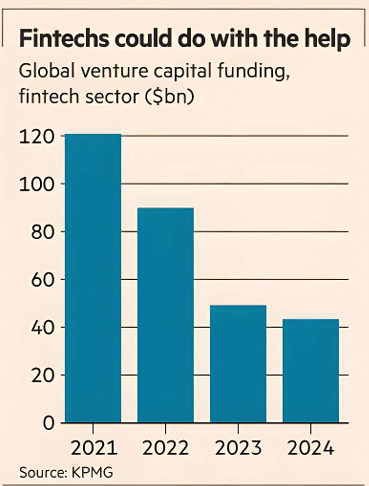

Just after he took over Twitter, Elon Musk ended a practice where the social network shared user data for free with developers at other companies who relied on this Twitter “graph” to build their own apps. Such gratis sharing of so-called application programming interfaces (APIs) was thought to help build a stronger ecosystem that would in the long run benefit Twitter itself.
Musk, however, concluded Twitter needed the short-term money more, and started selling its data.
The US banking industry has now taken a Musk-like posture. JPMorgan plans to sell APIs that it previously provided for free, both to data aggregators and directly to upstart... fintechs. Some fintechs have reportedly received invoices as high as 60 to 100 per cent of annual revenue.
JPMorgan’s move comes amid a change in the regulatory environment.
The Biden administration had sought to implement a rule making banks share their data for free, a policy that exists around the world. US President Donald Trump has recently abandoned a lawsuit to protect that concept from a challenge. But the politics are complicated: Trump’s supporters in Silicon Valley are sceptical about the traditional banking industry and are creating new financial services using “open banking”, where existing banks provide their customer data.
Powerful incumbents are understandably wary about giving up the building blocks of their power. The banks reckon that providing customer data to those who request it creates substantial costs that they would ultimately have to pass on to customers. More importantly, giving away their APIs for free has led to overconsumption. Fixing a price may encourage a more efficient approach.
On the flipside, competition in financial services has created new companies outside the traditional banking sector and the worry is that innovation could now be chilled.
A decade ago, the likes of Netflix argued for “net neutrality” where those companies that owned the internet pipes could not choose to throttle bandwidth for content providers who did not want to pay an extra toll.
Banking customer data similarly is either social infrastructure or a private trade secret, but the ultimate determination is made by those who hold political power.
JPMorgan has a market capitalisation of $800bn but has struggled at times with what posture is needed to take on challengers. It has sometimes found that co-operation on commercial terms can be advantageous to both sides.
Expect the banks and start-ups to find a deal, however grudging, that works.